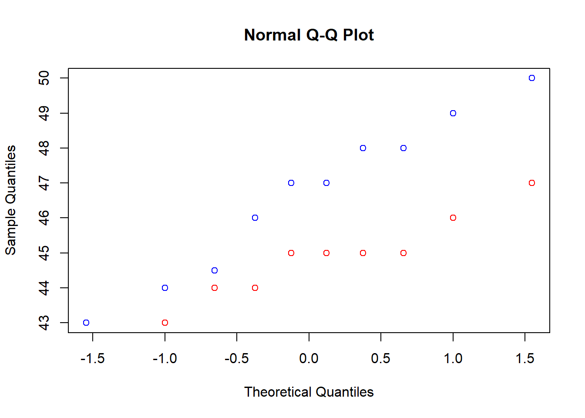
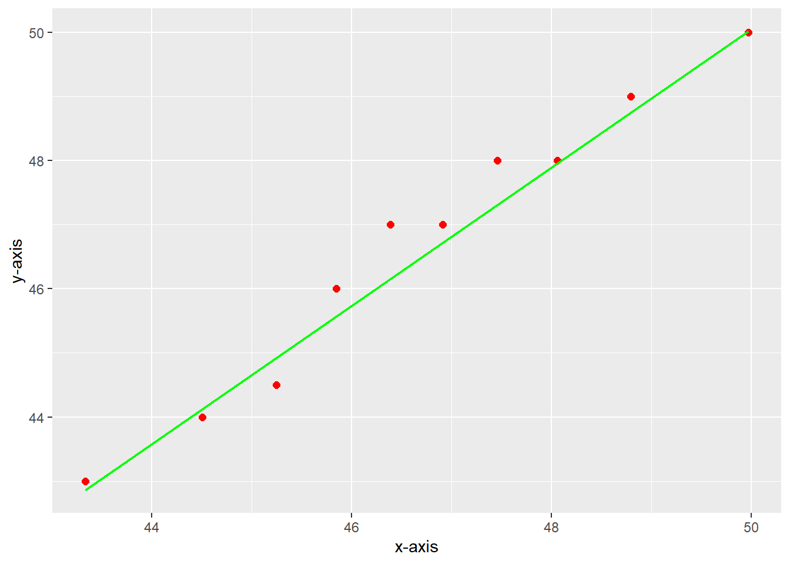

m1 = (c(47 ,44 ,43 ,49 ,48 ,44.5 ,48 ,47 ,46 ,50))
s1=sd(m1)
x1=mean(m1)
print(s1)[1] 2.261391print(x1)[1] 46.65m2= (c(45 ,43 ,42 ,45 ,46 ,45 ,44 ,45 ,44 ,47))
s2=sd(m2)
x2=mean(m2)
print(s2)[1] 1.429841print(x2)[1] 44.6A polymer is manufactured in a batch chemical process. Viscosity measurements are made on each batch, and long experience with the process has indicated that the variability in the process is fairly stable with \(\sigma\) = 20. Fifteen random batch of viscosity measurements yields a sample mean of 750.2. A process change that involves switching the type of catalyst used in the process is made. This change does not change the variability in the process. Following the process change, eight (independent) batch viscosity measurements are taken at random that has generated a sample mean of 756.88.
\(H_0: \bar x_1-\bar x_2=10\)
\(H_1: \bar x_1-\bar x_2<10\)
\((-\infty, \bar x_1-\bar x_2+ z_{0.1}\sqrt{\frac{\sigma_1^2}{n_1}+\frac{\sigma_2^2}{n_2}}]\)
\(\rightarrow (-\infty, 750.2-756.88 + 1.28\sqrt{\frac{20^2}{15}+\frac{20^2}{8}}]\)
\(\rightarrow (-\infty, -6.68 + 1.28\sqrt{76.667}]\)
\(\rightarrow (-\infty, -6.68 + 11.2076]\)
\(\rightarrow (-\infty, 4.5276]\)
At the 90% confidence level (0.1 significance level) \(\bar x_1-\bar x_2\) is in the range \((-\infty, 4.5276]\) so therefore \(\bar x_1-\bar x_2\) is less than 10 at the 0.1 level of significance.
We need the following to be true:
We know that \(\sigma_1=\sigma_2=20\) and samples are independent but the rest of them need to be assumed.
The supervisor of a factory believes that method 1 takes workers lesser time to perform a task than method 2, on the average. Two independent random samples of 10 workers of the factory are selected and workers from different samples are asked to perform the task using different methods. The times used by the 20 workers are given below in seconds:
| Worker | 1 | 2 | 3 | 4 | 5 | 6 | 7 | 8 | 9 | 10 |
|---|---|---|---|---|---|---|---|---|---|---|
| Method 1 | 47 | 44 | 43 | 49 | 48 | 44.5 | 48 | 47 | 46 | 50 |
| Method 2 | 45 | 43 | 42 | 45 | 46 | 45 | 44 | 45 | 44 | 47 |
\(H_0: \bar x_1-\bar x_2=0\)
\(H_1: \bar x_1-\bar x_2<0\)
\(df= n_1+n_2-2=18\)
\(t<-t_\alpha=-2.552\)
\(S_p=\sqrt{\frac{(n_1-1)s_1^2+(n_2)s_2^2}{df}}\)
Test Statistic: \(t=\frac{\bar x_1-\bar x_2 - (\mu_1 - \mu_2)}{S_p\sqrt{1/n_1 +1/n_2}}\)
m1 = (c(47 ,44 ,43 ,49 ,48 ,44.5 ,48 ,47 ,46 ,50))
s1=sd(m1)
x1=mean(m1)
print(s1)[1] 2.261391print(x1)[1] 46.65m2= (c(45 ,43 ,42 ,45 ,46 ,45 ,44 ,45 ,44 ,47))
s2=sd(m2)
x2=mean(m2)
print(s2)[1] 1.429841print(x2)[1] 44.6q1 = qqnorm(m1, col="blue")
q2 = qqnorm(m2, plot.it= FALSE)
points(q2, col="red")
qqline(q1[[1]], col="blue")
qqline(q2[[1]], col="red")
ggplot(mapping = aes(sample = m1)) + stat_qq_point(size = 2,color = "red") + stat_qq_line(color="green") + xlab("x-axis") + ylab("y-axis")